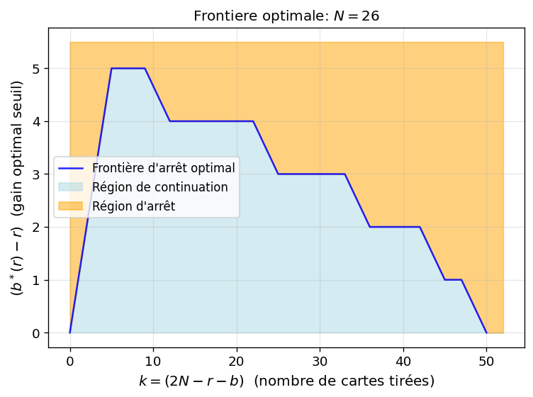
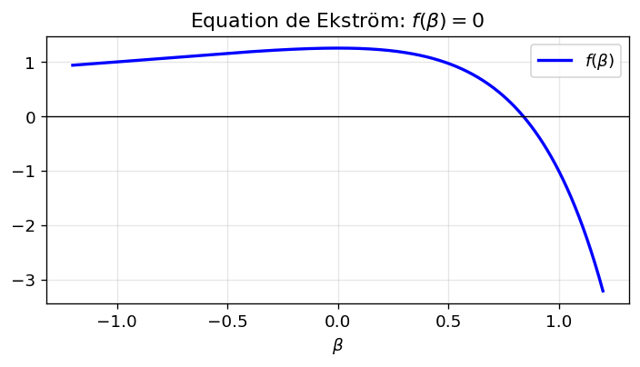
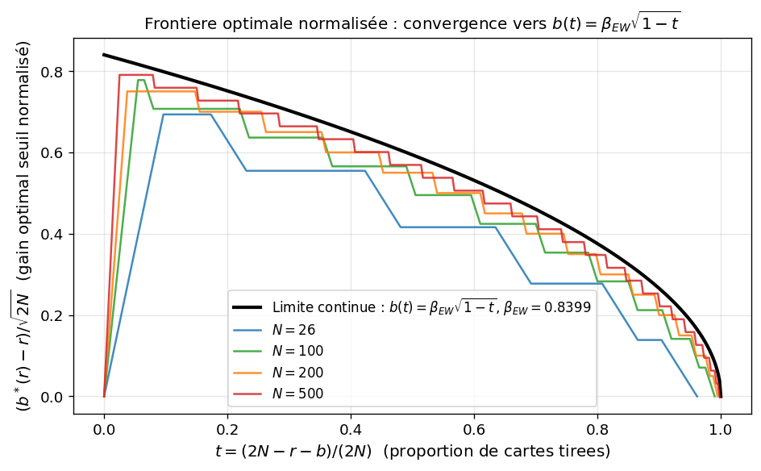
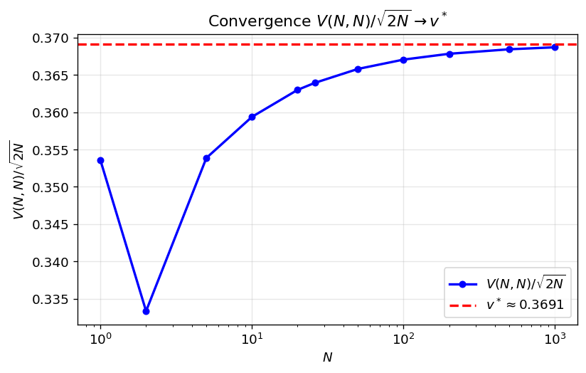
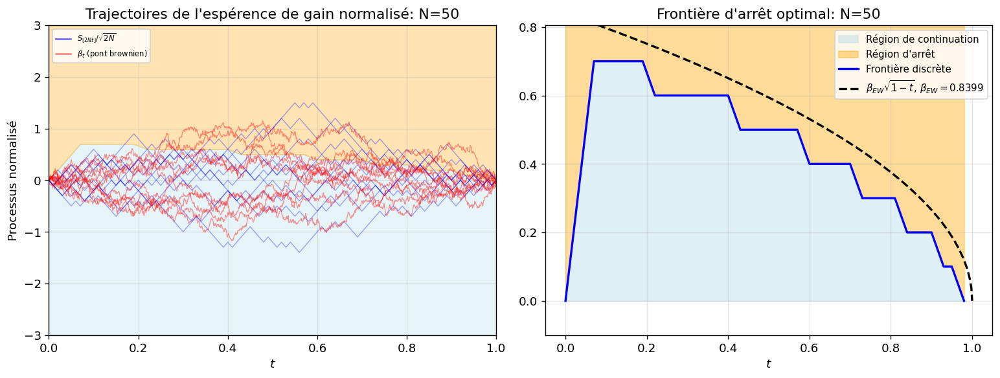
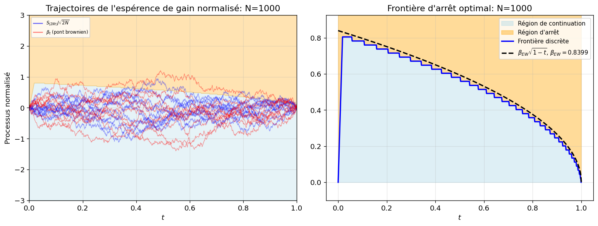

Afficher le code
import numpy as np
import matplotlib.pyplot as plt
from scipy.stats import norm
from scipy.optimize import brentq
np.random.seed(42)
plt.rcParams.update({'figure.dpi': 120, 'font.size': 11})Référence : Ekström, E. & Vaicenavicius, J. (2020). Optimal stopping of a Brownian bridge with an unknown pinning point. Stochastic Processes and their Applications, 130(2), 806–823.
On tire sans remise depuis un paquet de \(2N\) cartes (\(N\) rouges \(= +1\), \(N\) noires \(= -1\)). Après \(k = 2N-(r+b)\) tirages, le gain total est \(G_k = b - r\).
Fonction valeur : \[V(r, b) = \sup_{k \leq \tau \leq 2N} \, \mathbb{E}[G_\tau \mid R_k = r, B_k = b].\]
Équation de Bellman : \[V(r, b) = \max\!\left(b - r,\; \frac{r}{r+b}\,V(r-1,b) + \frac{b}{r+b}\,V(r,b-1)\right),\] avec \(V(0, b) = b\) et \(V(r, 0) = 0\).
def compute_V(N):
""" Retourne la table complete V[r,b] pour r,b dans {0,...,N}. """
V = np.zeros((N+1, N+1))
for b in range(1, N+1):
V[0, b] = b # bord r=0 : arreter immediatement
# bord b=0 : V[r,0]=0 par initialisation
# (continuer jusqu''puisement, gain final = 0)
for r in range(1, N+1):
for b in range(1, N+1):
p = r / (r + b)
continuation = p * V[r-1, b] + (1-p) * V[r, b-1]
V[r, b] = max(b - r, continuation)
return V
# Pour N = 26
V26 = compute_V(26)
print(f'V(26,26) = {V26[26,26]:.4f} dollars')V(26,26) = 2.6245 dollars N | V(N,N) | V(N,N)/sqrt(N)
----------------------------------------
1 | 0.500000 | 0.500000
2 | 0.666667 | 0.471405
5 | 1.119048 | 0.500453
10 | 1.607228 | 0.508250
20 | 2.295859 | 0.513370
26 | 2.624476 | 0.514702
50 | 3.658141 | 0.517339
100 | 5.191092 | 0.519109
200 | 7.356939 | 0.520214
500 | 11.651523 | 0.521072
1000 | 16.489496 | 0.521444Définition. La région de continuation est \[\mathcal{C} = \{(r,b) \in [|0,N|]: V(r,b) > b-r\}, \qquad \mathcal{A} = \{(r,b) \in [|0,N|] : V(r,b) = b-r\}.\]
Pour chaque \(r\), le seuil de frontière est : \[b^*(r) = \max\{b \in [|1,N|] : V(r,b) > b - r\}\] (dernier \(b\) pour lequel il est encore optimal de continuer le tirage).
Représentation normalisée. Pour comparer à la limite continue proposée dans (Ekström, 2020) on pose : \[t = \frac{2N - r - b}{2N} \in [0,1], \qquad x = \frac{b-r}{\sqrt{2N}}.\] La frontière dans l’espace \((t, x)\) converge vers \(b(t) = \beta_{EW}\sqrt{1-t}\). Où t représente la proportion de cartes déjà tirées parmi les \(2N\) dans l’état \((r, b)\), et \(x\) le gain normalisé.
def frontiere_normalisee(N, V=None):
"""
Frontiere d'arret optimal dans l'espace normalise.
Pour chaque r, b_star(r) est le dernier point en region de continuation.
On renvoie (t, x) = ((2N-r-b_star)/(2N), (b_star-r)/sqrt(2N)).
"""
if V is None:
V = compute_V(N)
t_front, x_front = [], []
for r in range(1, N+1):
b_star = None
for b in range(N, 0, -1): # descendre de N vers 1
if V[r, b] > b - r: # continuation stricte
b_star = b
break
if b_star is not None:
t_front.append((2*N - r - b_star) / (2*N))
x_front.append((b_star - r) / np.sqrt(2*N))
order = np.argsort(t_front)
return np.array(t_front)[order], np.array(x_front)[order]
t_fr, x_fr = frontiere_normalisee(26, V26)
print(f'Frontiere N=26 : {len(t_fr)} points')
print(f' t dans [{t_fr.min():.3f}, {t_fr.max():.3f}]')
print(f' Gain normalisé dans [{x_fr.min():.3f}, {x_fr.max():.3f}]')Frontiere N=26 : 26 points
t dans [0.000, 0.962]
Gain normalisé dans [0.000, 0.693]t_th = np.linspace(0, 1, 500)*2*26
t_fr = t_fr*2*26
x_fr = x_fr*np.sqrt(2*26)
plt.plot(t_fr, x_fr, lw=1.5, alpha=0.85, label="Frontière d'arrêt optimal", color='blue')
plt.fill_between(t_th, 0, np.interp(t_th, t_fr, x_fr), color='lightblue', alpha=0.5, label='Région de continuation')
y_max = max(x_fr) * 1.1
plt.fill_between(t_th, np.interp(t_th, t_fr, x_fr), y_max, color='orange', alpha=0.5, label="Région d'arrêt")
plt.xlabel(r'$k = (2N-r-b)$ (nombre de cartes tirées)', fontsize=12)
plt.ylabel(r'$(b^*(r)-r)$ (gain optimal seuil)', fontsize=12)
plt.title(r'Frontiere optimale: $N = 26$', fontsize=12)
plt.legend(fontsize=10)
plt.grid(True, alpha=0.3)
plt.tight_layout()
plt.show()
La frontière continue est \(b(t) = \beta_{EW}\,\sqrt{1-t}\) où \(\beta_{EW}\) est l’unique racine positive de :
\(f(\beta) = \sqrt{2\pi}\,(1 - \beta^2)\,e^{\beta^2/2}\,\Phi(\beta) - \beta = 0\) (Ekström, 2020).
def func_aux(beta):
"""Equation d'Ekström"""
return np.sqrt(2*np.pi) * (1 - beta**2) * np.exp(beta**2/2) * norm.cdf(beta) - beta
# Tracé pour voir l'unique racine
bv = np.linspace(-1.2, 1.2, 400)
fig, ax = plt.subplots(figsize=(6, 3.5))
ax.plot(bv, [func_aux(b) for b in bv], 'b-', lw=2, label=r'$f(\beta)$')
ax.axhline(0, color='k', lw=0.8)
ax.set_xlabel(r'$\beta$')
ax.set_title(r'Equation de Ekström: $f(\beta) = 0$')
ax.grid(True, alpha=0.3)
ax.legend()
plt.tight_layout()
plt.show()
beta_EW = brentq(func_aux, 0.01, 1.0, xtol=1e-12) # Résolution numérique de l'équation d'Ekström
print(f'beta_EW = {beta_EW:.8f}')
print(f'Verification : f(beta_EW) = {func_aux(beta_EW):.2e}')
beta_EW = 0.83992368
Verification : f(beta_EW) = 1.15e-12fig, ax = plt.subplots(figsize=(8, 5))
t_th = np.linspace(0, 1, 500)
ax.plot(t_th, beta_EW * np.sqrt(1 - t_th), 'k-', lw=2.5,
label=f'Limite continue : $b(t) = \\beta_{{EW}}\\sqrt{{1-t}}$,'
f' $\\beta_{{EW}} = {beta_EW:.4f}$')
colors = ['#1f77b4', '#2ca02c', '#ff7f0e', '#d62728']
for idx, Nv in enumerate([26, 100, 200, 500]):
Vv = compute_V(Nv)
tf, xf = frontiere_normalisee(Nv, Vv)
ax.plot(tf, xf, color=colors[idx], lw=1.5, alpha=0.85, label=f'$N = {Nv}$')
ax.set_xlabel(r'$t = (2N-r-b)/(2N)$ (proportion de cartes tirees)', fontsize=12)
ax.set_ylabel(r'$(b^*(r)-r)/\sqrt{2N}$ (gain optimal seuil normalisé)', fontsize=12)
ax.set_title(r'Frontiere optimale normalisée : convergence vers $b(t) = \beta_{EW}\sqrt{1-t}$',
fontsize=12)
ax.legend(fontsize=10)
ax.grid(True, alpha=0.3)
plt.tight_layout()
plt.show()
ratios = [compute_V(n)[n, n] / np.sqrt(2*n) for n in N_list]
v_star = 0.52204 / np.sqrt(2)
fig, ax = plt.subplots(figsize=(7, 4.5))
ax.semilogx(N_list, ratios, 'bo-', ms=5, lw=2, label=r'$V(N,N)/\sqrt{2N}$')
ax.axhline(v_star, color='r', ls='--', lw=2, label=f'$v^* \\approx {v_star:.4f}$')
ax.set_xlabel('$N$')
ax.set_ylabel(r'$V(N,N)/\sqrt{2N}$')
ax.set_title(r'Convergence $V(N,N)/\sqrt{2N} \to v^*$')
ax.legend()
ax.grid(True, alpha=0.3)
plt.tight_layout()
plt.show()
for N_demo in [50, 1000]:
fig, axes = plt.subplots(1, 2, figsize=(13, 5))
# Calcul de la frontière
Vv = compute_V(N_demo)
tf, xf = frontiere_normalisee(N_demo, Vv)
ax = axes[0]
# Région de continuation
t_full = np.concatenate([[0], tf, [1]])
x_full = np.concatenate([[xf[0]], xf, [xf[-1]]])
ax.fill_between(t_full, -3, x_full, color='lightblue', alpha=0.3)
# Région d'arrêt
ax.fill_between(t_full, x_full, 3, color='orange', alpha=0.3)
# Frontière d'arrêt optimal
#ax.plot(tf, xf, 'k-', lw=2, label=f'Frontière N={N_demo}')
# Trajectoire discrète
t_disc = np.linspace(0, 1, 2*N_demo + 1)
for _ in range(10):
deck = np.array([1]*N_demo + [-1]*N_demo, dtype=float)
np.random.shuffle(deck)
path = np.concatenate([[0], np.cumsum(deck)]) / np.sqrt(2*N_demo)
ax.plot(t_disc, path, 'b-', alpha=0.35, lw=0.8)
# Pont brownien
steps = 1000
dt = 1/steps
t_bb = np.linspace(0, 1, steps+1)
for _ in range(10):
dW = np.sqrt(dt)*np.random.randn(steps)
W = np.concatenate([[0], np.cumsum(dW)])
B = W - t_bb*W[-1]
ax.plot(t_bb, B, 'r-', alpha=0.4, lw=0.8)
ax.plot([], [], 'b-', alpha=0.6, label=f'$S_{{\\lfloor 2Nt\\rfloor}}/\\sqrt{{2N}}$')
ax.plot([], [], 'r-', alpha=0.5, label=r'$\beta_t$ (pont brownien)')
ax.set_xlabel('$t$')
ax.set_ylabel('Processus normalisé')
ax.set_title(f"Trajectoires de l'espérence de gain normalisé: N={N_demo}")
ax.legend(fontsize=7, loc='upper left')
ax.grid(True, alpha=0.3)
ax.set_xlim([0, 1])
ax.set_ylim([-3, 3])
ax2 = axes[1]
ax2.fill_between(tf, 0, xf, color='lightblue', alpha=0.4, label="Région de continuation")
y_max = max(xf) * 1.15
ax2.fill_between(tf, xf, y_max, color='orange', alpha=0.4, label="Région d'arrêt")
ax2.plot(tf, xf, 'b-', lw=2, label="Frontière discrète")
t_th2 = np.linspace(0, 1, 500)
ax2.plot(t_th2, beta_EW*np.sqrt(1-t_th2), 'k--', lw=2,
label=f'$\\beta_{{EW}}\\sqrt{{1-t}}$, $\\beta_{{EW}}={beta_EW:.4f}$')
ax2.set_xlabel(r'$t$ ')
#ax2.set_ylabel(r'Gain optimal seuil $(b^*(r)-r)/\sqrt{2N}$')
ax2.set_title(f"Frontière d'arrêt optimal: N={N_demo}")
ax2.legend(fontsize=9)
ax2.grid(True, alpha=0.3)
ax2.set_ylim(bottom=-0.1, top=y_max)
plt.tight_layout()
plt.show()

\(V(26,26)\) \(\approx 2.624\) dollars
\(C^* = \lim_N V(N,N)/\sqrt{N}\) \(\approx 0.5220\)
\(v^* = C^*/\sqrt{2}\) \(\approx 0.369\)
Borne : \(C^* \le \sqrt{\pi}/2\) \(\approx 0.886\)
Règle optimale : s’arrêter en \((r,b)\) dès que \(b - r \ge \frac{r}{r+b}V(r-1,b) + \frac{b}{r+b}V(r,b-1).\)
Frontière continue : \(b(t) = \beta_{EW}\sqrt{1-t}\), \(\beta_{EW} \approx 0.8399\) solution de l’équation de Ekström.